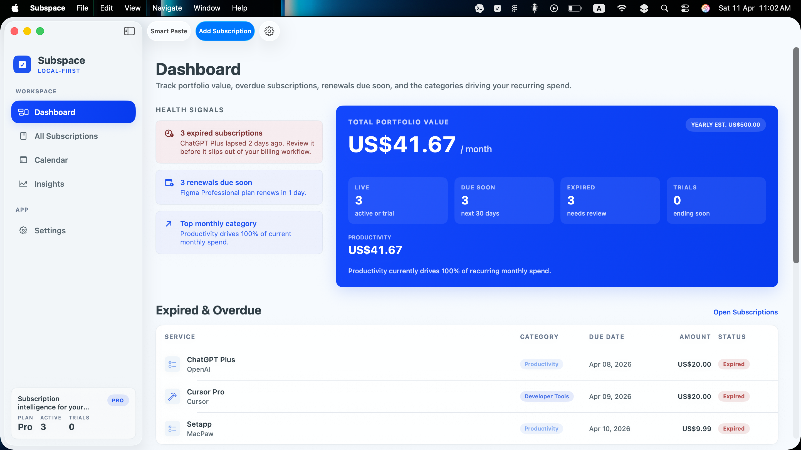
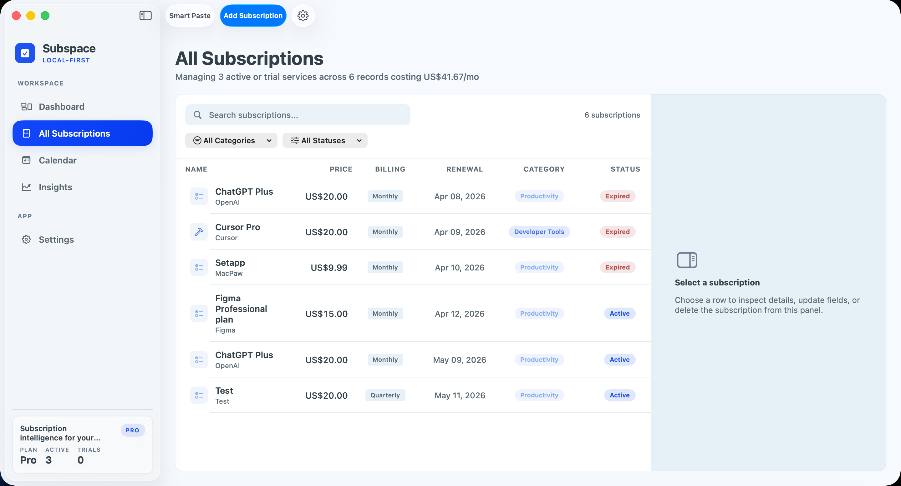
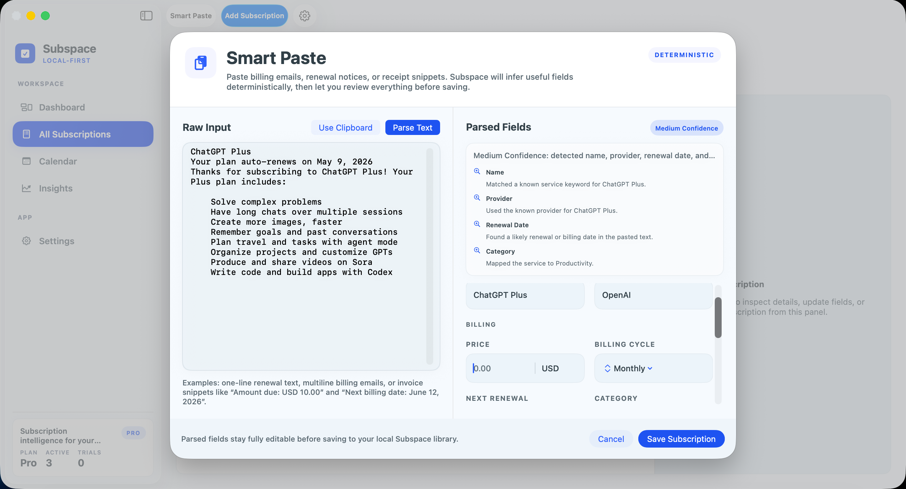
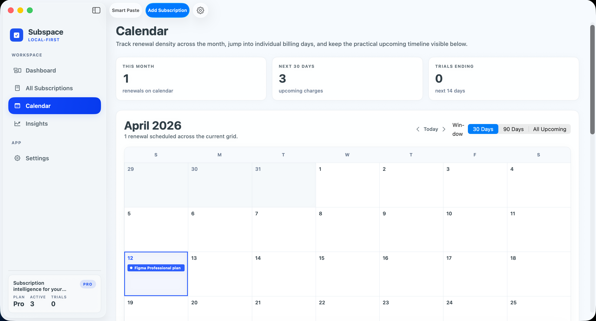
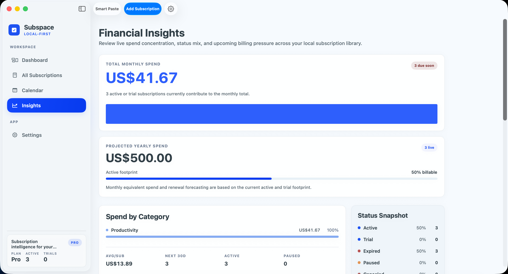
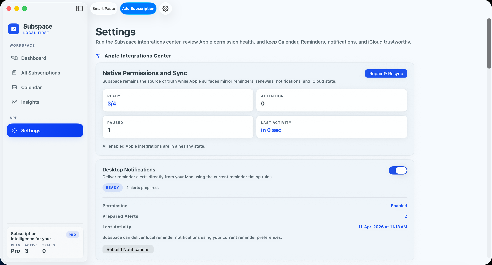

Renewal clarity
See upcoming renewals, overdue subscriptions, and trial endings without spreadsheet drift.
Local-first macOS subscription tracker
Subspace gives your subscriptions a calm command center: renewals, trials, overdue items, Apple-native reminders, and Pro sync when you need it.
Free to start. Subspace Pro unlocks unlimited tracking and Apple-native sync.

Product tour
Watch the real macOS flow: dashboard health, renewal review, Smart Paste capture, and the Apple-native surfaces that keep Subspace practical.
Why Subspace
See upcoming renewals, overdue subscriptions, and trial endings without spreadsheet drift.
Your subscription library starts on your Mac. Optional Apple services stay user-controlled.
Smart Paste turns billing text into editable subscription drafts with deterministic parsing.





Apple-native
Pricing
Track up to 5 subscriptions with the core local-first library.
Unlock unlimited subscriptions, iCloud sync, Calendar sync, and Reminders sync.
Ready for launch